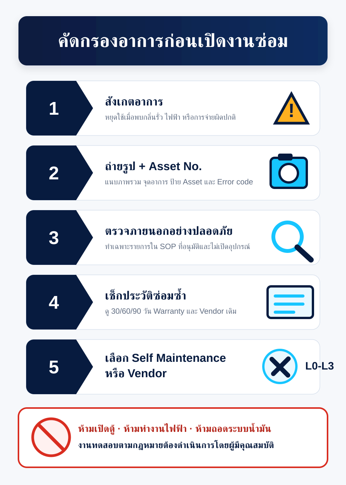

01 · CURRENT STATE
สิ่งแรกที่ต้องแก้ ไม่ใช่สีของกราฟ
Baseline สองชุดต่างกันเกือบเท่าเป้าหมาย 20% จึงต้อง Reconcile ก่อนประกาศผล
ค่า “ลด 50.04%” ยังเป็น Provisional
ต้องรวม Actual + Commitment + Accrual, ใช้ Latest Complete Period และผ่าน Finance lock ก่อน การจ่ายช้าหรือใบแจ้งหนี้ยังไม่เข้าระบบ ไม่ใช่ผลประหยัด
02 · POWER BI PRODUCT
10 หน้าที่พาจากตัวเลขไปสู่การลงมือ
Saving Control Tower
Baseline, Exposure, Saving, Gap, Data quality
PM / CM Portfolio
Cost, volume, cost/job และ movement
Symptom Pareto
Top causes + cumulative impact + Unknown
Repair Path Sankey
Type → Asset → Symptom → Resolution → Outcome
Bad Actor Asset
Repeat, MTBF, lifecycle cost, replace flag
Self Maintenance
Eligible, resolved, avoided dispatch, reopen
Vendor & Warranty
SLA, price variance, repeat, warranty recovery
PM & Legal
Due, overdue, compliance, geographic bundle
Budget & Forecast
Budget, actual, commitment, accrual, EAC
Data Quality
Freshness, coverage, duplicate, reconciliation
Service / SAP / Asset / Budget→
Dataflow / Lakehouse→
Star Semantic Model→
Power BI + Alerts
ค่าเริ่มต้นที่เหมาะสมคือ Near-real-time 30-60 นาที ไม่จำเป็นต้องใช้ streaming ทุกข้อมูล; หาก SLA ต่ำกว่า 5 นาทีจึงพิจารณา Fabric Real-Time Intelligence
03 · 20% SAVING PLAN
แบ่งเป้าหมาย 2.518 ล้านบาทเป็นคันโยกที่มี Owner
Preventable CM / Repeat37.7%
฿950K
Vendor / Parts19.9%
฿500K
PM & Legal Bundling17.9%
฿450K
Repair vs Replace / Reuse15.9%
฿400K
Billing / Duplicate Control8.7%
฿218K
04 · SELF MAINTENANCE
ช่วยได้ โดยไม่ข้ามเส้นความปลอดภัย
L0Observeหยุดใช้ กั้นพื้นที่ เก็บหลักฐาน
L1Guidedเฉพาะ SOP ที่ผู้ผลิตอนุมัติ
L2Technicalช่าง/ผู้รับจ้างที่ผ่านคุณสมบัติ
L3Statutoryผู้ทดสอบ/ตรวจสอบตามกฎหมาย
ห้าม
เปิดตู้ · ทำงานไฟฟ้า · ถอดระบบน้ำมัน · ทดสอบแทนผู้มีคุณสมบัติ

05 · DELIVERY ROADMAP
12 สัปดาห์ จาก Prototype สู่การใช้จริง
Governance
Baseline, KPI, Safety sign-off
Data Foundation
Star model, mapping, reconciliation
Executive MVP
Control tower + Pareto + DQ
Operational Pilot
Top 5 symptoms + saving ledger
Scale
Vendor, PM, Sankey, automation
Definition of Done
- Finance reconciliation variance ≤ 1%
- Unknown symptom cost ≤ 5%
- Asset/SAP match ≥ 98%
- Monthly approved saving run-rate ≥ ฿209,833
- Legal compliance 100% และ Safety incident = 0